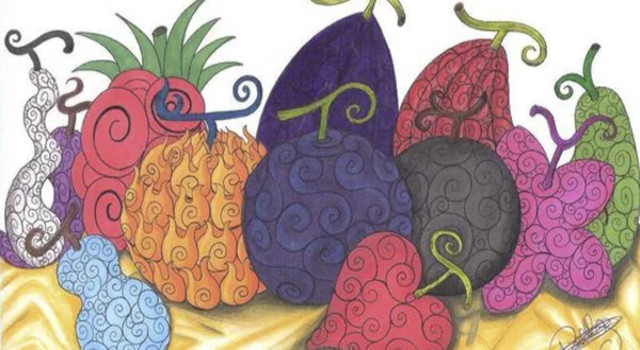
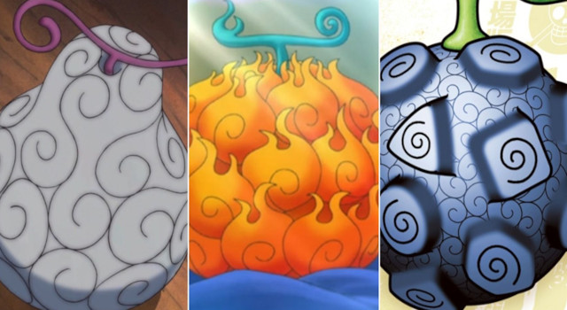

História
As Akuma no Mi são frutas misteriosas e especiais espalhadas por todo o mundo, conhecidas por conceder aos seus consumidores poderes sobre-humanos permanentes, bem como uma incapacidade permanente de nadar.
Como um todo, as Akuma no Mi abrangem centenas de poderes diferentes, desde os simples até os capazes de destruição em massa. Elas são amplamente agrupadas em três categorias: Paramecia, Logia e Zoan.
As Akuma no Mi são a fonte de poder dos indivíduos mais importantes do mundo, especialmente entre os Três Grandes Poderes. Isso, junto com sua raridade geral, faz com que elas sejam muito procuradas; frutas individuais podem ser avaliadas em centenas de milhões em Belly, e grandes esforços têm sido feitos para produzir versões artificiais em massa para uso bélico. Com apenas uma exceção notável, um indivíduo só pode adquirir os poderes de uma única Akuma no Mi e sobreviver.
Uma Akuma no Mi, depois de consumida, dá ao consumidor um superpoder ou característica especial, da qual ele logo se dará conta; alguém que comeu uma Akuma no Mi e ganhou seus poderes é conhecido como Usuário de Akuma no Mi, literalmente "Usuário de Poderes"). Existem mais de 100 Akuma no Mi diferentes no mundo, mas apenas uma de cada Akuma no Mi existe ao mesmo tempo. Além disso, todas as Akuma no Mi são conhecidas por seu sabor muito ruim, e por fazer com que o consumidor perca permanentemente sua capacidade de nadar.